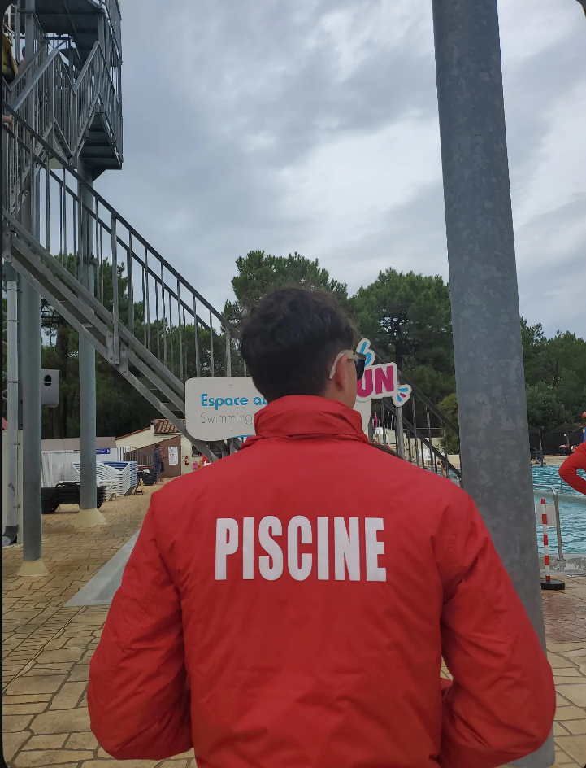
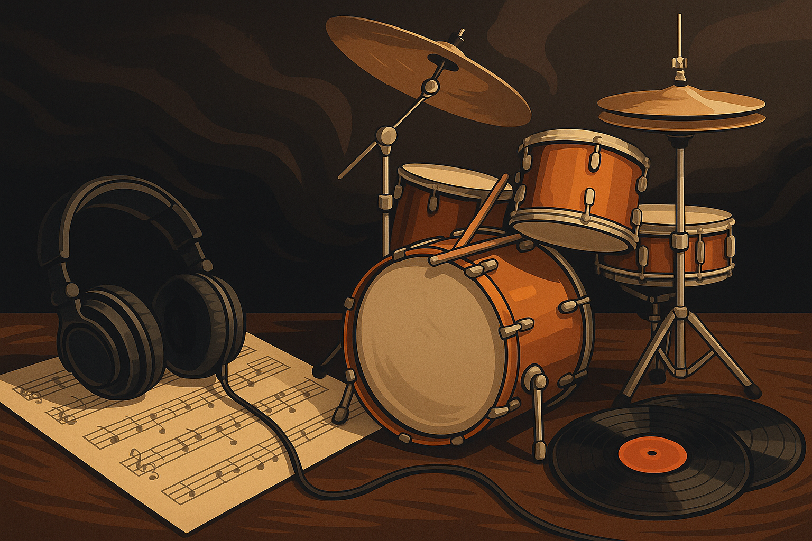

Qui suis-je ?
Voici un peu plus d'informations sur mon parcours et mes compétences
Je suis étudiant en deuxième année de science des données à l’Université de Poitiers, site de Niort. Ma formation m’a permis de développer des compétences solides en analyse, visualisation, modélisation et programmation. Je me spécialise notamment dans l’usage de Python, R, SQL, Power BI et VBA.
J’ai eu l’occasion d’appliquer ces compétences dans divers projets étudiants, en groupe comme en autonomie. Mon stage en entreprise m’a permis de confronter mes acquis à des problématiques concrètes, avec des résultats exploitables. Cette expérience m’a aussi appris à être rigoureux et autonome dans un cadre professionnel.
J’accorde beaucoup d’importance à la communication et au travail d’équipe. Je suis une personne abordable, ouverte et attentive à l’atmosphère de groupe. Cela me permet de collaborer facilement, quel que soit le contexte ou le public.
J’ai une vraie culture du feedback : je sollicite volontiers les retours pour améliorer mes rendus. Qu’ils viennent d’un professionnel ou d’un œil extérieur, chaque avis m’aide à progresser. J’essaie toujours d’avoir un regard critique et constructif sur mon propre travail.
Enfin, je suis animé par une forte curiosité et une envie constante d’apprendre. L’évolution rapide du domaine de la data m’encourage à me former en continu. Je cherche à devenir un professionnel complet, capable de transformer les données en leviers de décision.
Compétences techniques
Data Visualisation
- Power BI
- Tableau
- Python
- R / RStudio
Développement
- SQL / MySQL
- SAS
- HTML / CSS / JS / PHP
- VBA
- Talend
Compétences transversales
- Méthodes de clustering
- Analyse de séries temporelles
- Méthodes agiles
Et à côté
En dehors de mes études, je travaille en tant que sauveteur aquatique. J’ai obtenu mon BNSSA en 2023, ce qui m’a permis d’effectuer de nombreux remplacements au centre aquatique X Eau, à Cognac. J’ai également travaillé deux saisons au camping Siblu Bonne Anse Plage, à La Palmyre, durant les étés 2023 et 2024. Ces expériences m’ont permis de développer un vrai sens des responsabilités, de la rigueur et une bonne capacité d’adaptation.
Je suis passionné par le sport depuis toujours. J’ai pratiqué le basket-ball tout au long de ma vie, un sport qui m’a appris l’esprit d’équipe et la persévérance. J’apprécie également la natation et la course à pied : toute occasion de me dépenser ou de relever un défi est pour moi une source de motivation.
La musique occupe une place centrale dans ma vie. Bien au-delà d’une passion, je joue de la batterie depuis toujours. Elle est devenue un véritable outil au quotidien. Elle m’aide à me concentrer, à me canaliser, à me détendre ou encore à me motiver, selon les moments. Peu importe le style : jazz, rock, classique, rap ou même une simple musique d’ambiance en fond sonore dans un bureau ; tant qu’elle est là, elle m’aide à trouver mon rythme. Sans musique, travailler devient difficile pour moi. À l’inverse, le moindre bruit parasite qui s’impose au-dessus de la musique peut facilement briser ma concentration. C’est un équilibre fragile, mais fondamental dans mon quotidien.
